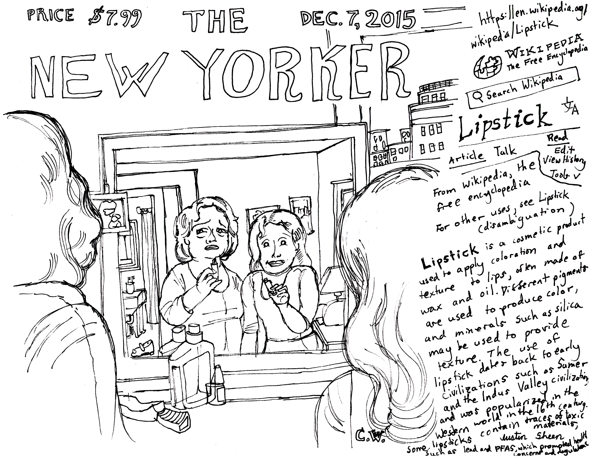
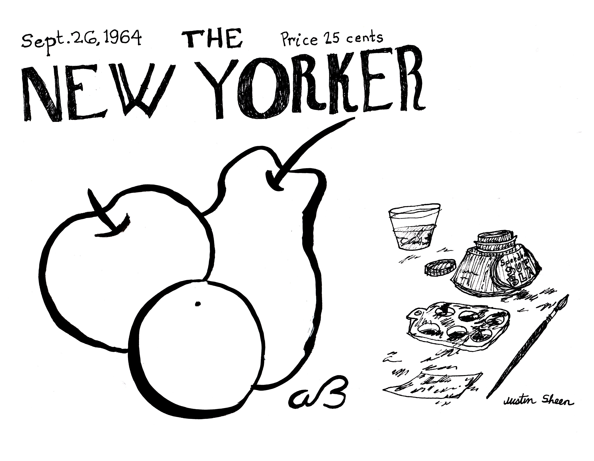
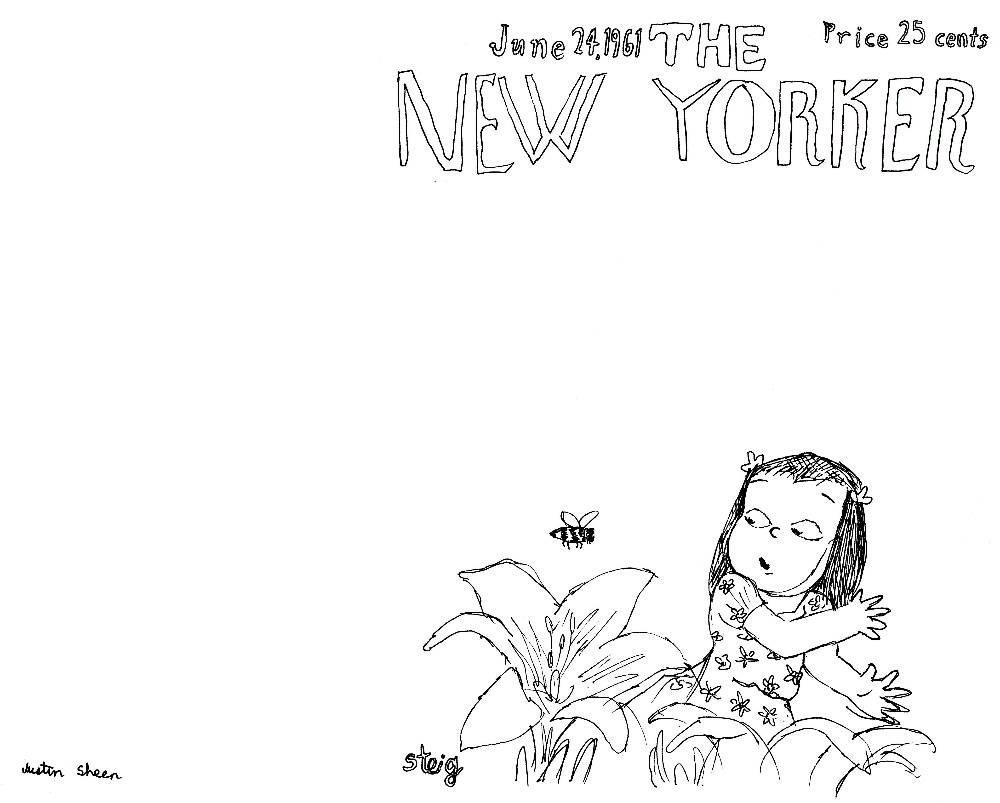

Cover Cartoons
2023-2024
Cover Cartoons is an ongoing exploration of old New Yorker covers where I either try to complete the cover or completely flip what it originally represented by a simple addition. In both cases, I'm attempting to force the cover to mean something else.
It's as if instead of being created to be a cover for The New Yorker, these images were actually created as a set-up up to one-hundred years ago which only now can be completed with a punchline, completely altering their original purpose. Some covers are already cartoon-like, made up of two things juxtaposed against each other, so it's just about taking one of those two parts and using it for a new meaning, leaving the now third other part hanging. Other covers are more subtle, so then it's just about supplying some element that brings out something more than that shy subtlety, recasting the cover to something much more direct. Deriving cartoons out of covers using pens, detaching them from their original colors, shades, and paints, traveling back in time and adjusting these covers to bring them down a notch to eye level. In the process we inadvertently learn more about these cover artists and accidentally reconsider their wonderful art.
2023-2024
Cover Cartoons is an ongoing exploration of old New Yorker covers where I either try to complete the cover or completely flip what it originally represented by a simple addition. In both cases, I'm attempting to force the cover to mean something else.
It's as if instead of being created to be a cover for The New Yorker, these images were actually created as a set-up up to one-hundred years ago which only now can be completed with a punchline, completely altering their original purpose. Some covers are already cartoon-like, made up of two things juxtaposed against each other, so it's just about taking one of those two parts and using it for a new meaning, leaving the now third other part hanging. Other covers are more subtle, so then it's just about supplying some element that brings out something more than that shy subtlety, recasting the cover to something much more direct. Deriving cartoons out of covers using pens, detaching them from their original colors, shades, and paints, traveling back in time and adjusting these covers to bring them down a notch to eye level. In the process we inadvertently learn more about these cover artists and accidentally reconsider their wonderful art.




